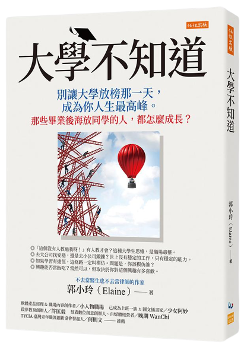

|  | 書名： 大學不知道：別讓大學放榜那一天，成為你人生最高峰。那些畢業後海放同學的人，都怎麼成長？ --- 簡介： 人生有許多種發展的可能，想想十年後的自己會是什麼樣子？有達成自己理想的生活了嗎？畢業後的我們應該也要繼續學習成長，不該讓畢業 成為我們人生最高峰的一天，而我們可以如何讓我們繼續成長呢？ --- 那些畢業後海放同學的人，都怎麼成長？ --- 作者： 郭小玲，筆名胃竇，喜馬拉雅前資深撰稿人，十點讀書簽約作者，橫跨醫學、法律、新聞、網路等各個領域。曾採訪過余秋雨、中國指揮家曹鵬、《奇葩說》辯手熊浩等大咖。 |
| 美好句子❤️： ☑️你目前的所有狀況，是你過去選擇的結果。 ☑️你可以假裝努力，但結果不會陪你演戲。 ☑️走好選擇的路，別選擇好走的路，我們才能成為真正的自己。 ☑️不敢開始，便永遠無法成長。 ☑️在這個世界裡，沒有人會為你的未來買單，你要麼努力地向上生長，要麼慢慢的爛在泥沼裡。 ☑️如果你想要什麼，就積極去追求，單槍匹馬你別怕，一槍孤勇又如何，這一路你可以哭，但不能驚懼，把理想變成戰鬥力，把熱愛變成生產力，才能贏來掌聲和鮮花。 ☑️思維決定行為，行為決定習慣，習慣決定性格，性格決定命運。 ☑️那些年，誰沒砸碎過幾次玻璃心。但破碎的玻璃心，用鋼筋水泥一點點重鑄之後，就能煉成一顆鑽石心，無堅不摧。 ☑️如果不改變你閱讀的書及交往的人，五年後的你和今天不會有什麼兩樣。 ☑️你恐懼的是恐懼本身，你必須殺死嚇退自己的恐懼。 ☑️很多事情都是堅持到後面，突破了臨界點才會爆發出效果。 ☑️大多數人總是高估自己一年的變化，卻低估自己堅持十年的成就。 ☑️真正厲害的人，從來不會只滿足做一個輸入者，而是要想方設法變成一個輸出者。 ☑️你不需要很厲害才能開始，但你需要開始才會變得很厲害。 ☑️成年人的世界，沒有那麼多童話，也沒有那麼多逆襲。所有的逆風成長，都是有備而來的。 --- 📔📔 在讀這本書之前，我期望的是讀完後的我可以有所不同的思維。當然，從書中作者也提出了各種幫助我們刻意成長的方式。許多事情學校都不會教，只有我們勇於嘗 試，才會學習到更多內容，而一直的擔心害怕只會讓機會來臨時，錯過抓住它的時機，因此好好善用工具，改變自我思維，成為努力向上的人。 |
|